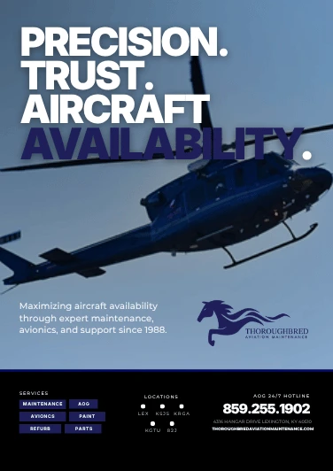
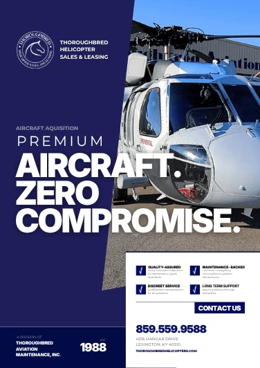
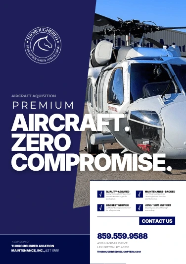
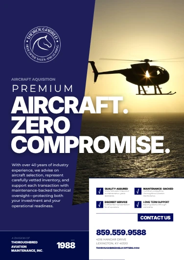
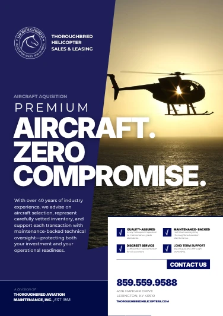
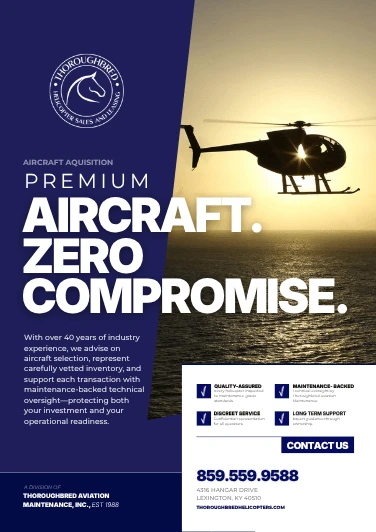
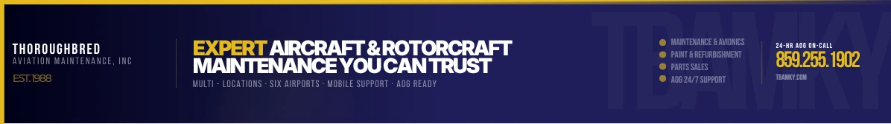
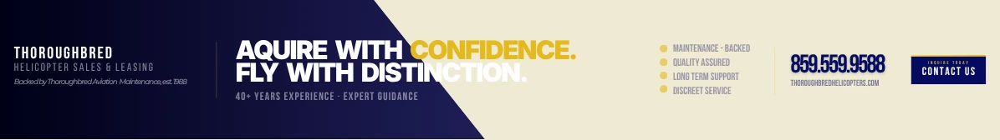

Aircraft buyers and owners
High-end clients evaluating aircraft availability, services, and the company behind the offer.
For Thoroughbred Aviation, I developed client-facing marketing materials that connected premium aircraft offerings with the expectations of high-end buyers.
4 min read · Original project artifacts

Thoroughbred Aviation works in aircraft maintenance and helicopter sales, serving clients making high-value, high-consideration decisions. Its marketing materials needed to present the aircraft and services clearly while supporting a professional, credible brand impression.
My 2026 engagement supported the company’s visibility across two industry conferences and related customer-facing communication. The work brought brand strategy, campaign messaging, and print and digital design into one coordinated set of materials.
I created marketing assets tailored to Thoroughbred’s brand and clientele, including advertising layouts, digital banners, and materials supporting conference and event visibility. My responsibilities included translating the business goal into a visual message and adapting that message across formats.
I also contributed to the wider client communication and brand-alignment work around those materials. The designs shown here include campaign concepts and variations; they document the creative development rather than implying that every version was published.
Aircraft marketing has to earn attention without losing credibility. A visually strong advertisement still needs to communicate what the company offers and make the next contact step apparent.
The same message also had to work in different spaces. A full-page print layout can support more visual detail than a compact digital banner, so adaptation required decisions about what to retain, emphasize, or simplify.
High-end clients evaluating aircraft availability, services, and the company behind the offer.
Industry attendees encountering the business in a busy event setting.
People who needed consistent, ready-to-use assets for marketing and customer conversations.
I connected the client’s aircraft and service offering with a concise positioning approach. The print concepts foreground aircraft imagery and a clear hierarchy of brand, message, supporting information, and contact details.
That hierarchy reflects the communication task: attract attention, establish the offer, and give a relevant prospect a way to continue the conversation.
The gallery includes variations in aircraft photography, color treatment, and composition. Comparing those versions made it possible to refine emphasis while keeping the campaign recognizable.
The designs use strong contrast and concise copy to support readability. In the selected layouts, the aircraft remains the visual subject while the brand and message provide the business context.
I developed both full-page advertising concepts and compact HELICOPS digital banners. Changing the format required a different balance of image, text, and available space.
The goal was continuity rather than simply shrinking a print ad. The banner needed to preserve the essential identity and offer in a much smaller footprint.
The creative work formed part of marketing support for two industry conferences. Conference and customer-facing materials needed to feel connected so the business presented a consistent impression across touchpoints.
The engagement combined strategy, production, and stakeholder communication. I managed the move from a business request into assets the client could use for its visibility and lead-generation efforts.
The variations show how the creative answered different communication requirements.
| What mattered | The response | Why it mattered |
|---|---|---|
| The purchase required confidence as well as attention. | Use clear aircraft imagery, concise positioning, and a professional hierarchy. | Present the offer with a credible visual identity. |
| The campaign needed several formats. | Adapt the composition while keeping the core message consistent. | Support recognition across print and digital touchpoints. |
| Prospects needed a way to act on interest. | Keep the contact path visible within the layout. | Connect the advertisement with a follow-up conversation. |
| Creative choices needed to be reviewed concretely. | Develop multiple layout and imagery variations. | Give the client visible options to compare and refine. |
Compare the full-page advertisement concepts and digital banner versions. Each design opens at a larger size for closer inspection.









The work supported two industry conferences and contributed to a reported 10% increase in calls and sales among high-end clients, as documented in my updated résumé.
The deliverables included print advertising concepts, banner variations, and customer-facing marketing assets. The reported business outcome belongs to the broader engagement; the source materials do not isolate the performance of each individual creative version.
This project strengthened my ability to communicate in an unfamiliar industry without relying on generic design choices. The visual work had to support the company’s actual offer and the expectations of its audience.
I would bring forward the same emphasis on format-specific design: keep the message coherent, but make each asset work for the place where someone will encounter it.
{kind=link}
{kind=link}
{kind=link}
{kind=link}
{kind=link}
{kind=link}
{kind=link}
{kind=link}